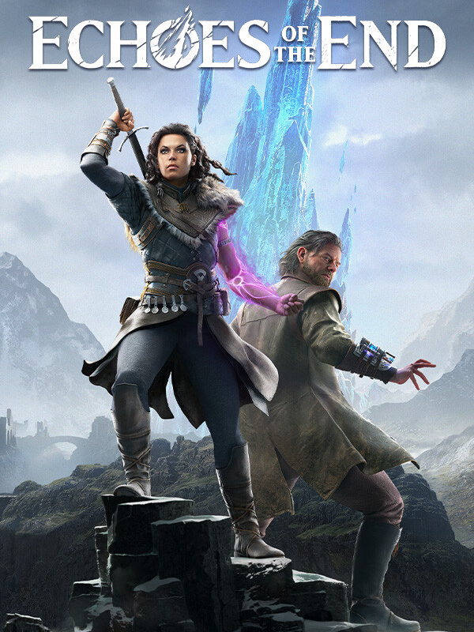

Echoes of the End
Echoes of the End
Details
 |
|
| Playtime | 1s |
| Last Activity | 8/19/2026 5:18:04 |
| Added | 12/6/2025 11:50:34 |
| Modified | 12/6/2025 11:50:55 |
| Completion Status | #Want to Play |
| Library | PlayStation |
| Source | PlayStation |
| Platform | Sony PlayStation 5 |
| Release Date | 8/12/2025 |
| Community Score | 70 |
| Critic Score | 82 |
| User Score | |
| Genre | Action Adventure |
| Developer | Myrkur Games |
| Publisher | Deep Silver |
| Feature | Achievements Cloud Saves Family Sharing Partial Controller Support Single-Player |
| Links | Twitch Steam Official Website YouTube Xbox Playstation Wikipedia |
| Tag | |
Description
 Embark on the Journey of a Lifetime
Embark on the Journey of a Lifetime
In Echoes of the End, you play as Ryn, a powerful vestige born with an affinity for what remains of an ancient magic. When her brother is captured and war threatens to engulf her homeland, Ryn must rise to defend it before it’s consumed by conflict.
Alongside Abram, a seasoned scholar with a haunted past, she embarks on a journey that will test their newly forged bond, uncover buried secrets, and challenge what it truly means to wield power in a world on the brink of collapse.
 A Broken World of Beauty and Conflict
A Broken World of Beauty and Conflict
The handcrafted world of Echoes of the End draws inspiration from the raw, untamed beauty of Iceland, a land where fire and ice coexist in striking contrast. Towering glaciers, ancient lava fields, and vast geothermal plains form the backbone of its landscapes, each shaped by nature’s elemental force. Traverse windswept valleys, descend into glowing volcanic depths, and uncover a realm filled with monsters, mysteries, and relics of a lost civilization where magic and machinery intertwine.
 Master Combat with Sword and Magic
Master Combat with Sword and Magic
Combat in Echoes of the End is fast, deliberate, and brutal, blending precise swordplay with devastating vestige powers.
Chain heavy strikes, parries, and magical abilities with seamless grace before finishing off your opponents with visceral execution moves.
Use your magic to hurl enemies into each other, into environmental hazards, or off sheer cliffs. Drain their life to sustain yourself in the heat of battle, and unlock new abilities across four upgrade trees that let you tailor your approach to combat throughout your adventure.
Ryn is not alone. Her capable companion Abram fights alongside her, using his abilities to damage, stun, trip, and grab enemies, creating perfect openings for devastating follow-up attacks.
 Your Story, Your Pace
Your Story, Your Pace
Whether you’re here for the story or seeking a true challenge, Echoes of the End has something for everyone.
The new Journey difficulty strikes a balance between combat intensity and steady progression, making it the definitive way for newcomers to experience the game’s story, combat, and exploration.
 Platforming and Puzzles: An Evolving Adventure
Platforming and Puzzles: An Evolving Adventure
Puzzles and platforming are at the heart of Echoes of the End’s adventure. Every chapter introduces a distinct visual theme and unique puzzle mechanics, ensuring that no two areas feel alike, from ancient ruins powered by shifting energy to volcanic chambers with twisted gravity.
Solve intricate environmental challenges that blend logic, timing, and exploration, often requiring clever use of Ryn’s abilities to manipulate the world around her. Leap, dash, and double-jump your way through a breathtaking world as you develop a growing arsenal of magical traversal powers throughout the journey.
 Customize, Evolve, and Master Your Power
Customize, Evolve, and Master Your Power
Forge your own path through a progression system that rewards mastery and experimentation, with over 40 upgrades that enhance and expand Ryn’s arsenal of skills. Every choice defines how you fight, explore, and survive in this ever-evolving world.
Outfits and relics further shape Ryn’s strengths, allowing you to adapt your approach to combat with unique builds and strategies. Unlock 13 outfits to personalize Ryn’s appearance and discover more than 20 relics that dramatically alter the flow of encounters, letting you fine-tune your playstyle, from relentless offense to tactical precision.
 Built Together With Players
Built Together With Players
Echoes of the End is created by a small, dedicated team who believe in delivering ambitious experiences. Every update, every animation, and every improvement is built by hand, funded by the studio’s own resources.
We’re not AAA, and that’s exactly why we can listen, adapt, and evolve faster. The Enhanced Edition is our promise to keep supporting the game and its players, to keep refining what we love, and to prove that a small team can create something truly special.
Your feedback shaped every improvement, from smoother controls and pacing to new content and features, and let us create the most complete, refined, and responsive version of our game yet.
We hope you will join us in the improved world of Aema, and if you enjoy your time with the game, or if you have feedback to share on what could be done better, please leave a review! It means so much to us here at Myrkur.